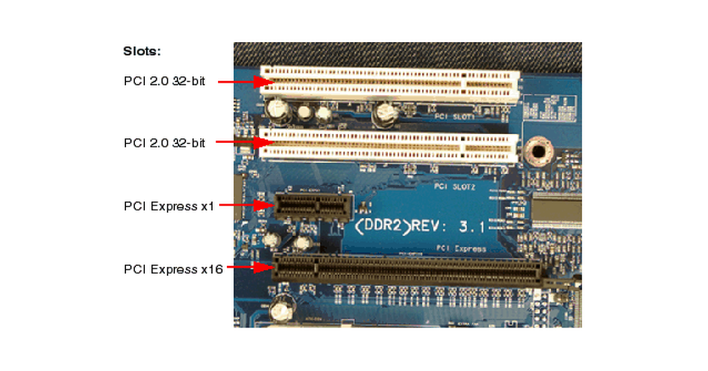

|  | PCI Express (Peripheral Component Interconnect Express), officially abbreviated as PCIe or PCI-e,is a high-speed serial computer expansion bus standard, designed to replace the older PCI, PCI-X and AGP bus standards. It is the common motherboard interface for personal computers' graphics cards, hard disk drive host adapters, SSDs, Wi-Fi and Ethernet hardware connections. PCIe has numerous improvements over the older standards, including higher maximum system bus throughput, lower I/O pin count and smaller physical footprint, better performance scaling for bus devices, a more detailed error detection and reporting mechanism (Advanced Error Reporting, AER), and native hot-swap functionality. More recent revisions of the PCIe standard provide hardware support for I/O virtualization. |
|
The PCI Express electrical interface is measured by the number of simultaneous lanes. (A lane is a single send/receive line of data. The analogy is a highway with traffic in both directions.) The interface is also used in a variety of other standards — most notably the laptop expansion card interface called ExpressCard. It is also used in the storage interfaces of SATA Express, U.2 (SFF-8639) and M.2 A PCI Express card fits into a slot of its physical size or larger (with ×16 as the largest used), but may not fit into a smaller PCI Express slot; for example, a ×16 card may not fit into a ×4 or ×8 slot. Some slots use open-ended sockets to permit physically longer cards and negotiate the best available electrical and logical connection. |
|